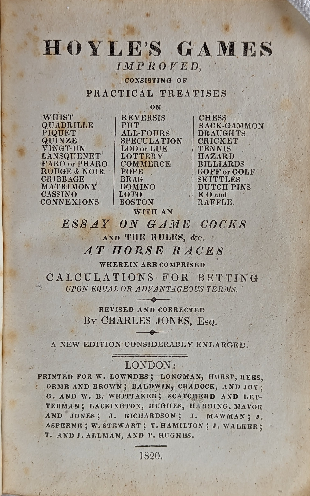

A Descriptive Bibliography of Edmond Hoyle
Copyright © 2014-26 by David Levy
(page updated 2026-01-20)User Guide
Jones.10
Hoyle's Games Improved, printed for W. Lowndes et al, tenth London edition, 1820.
 |
Title: | HOYLE's GAMES | IMPROVED | CONSISTING OF | PRACTICAL TREATISES | ON | [12 lines to left of rule] WHIST | QUADRILLE | PIQUET | QUINZE | VINGT-UN | LANSQUENET | FARO or PHARO | ROUGE & NOIR | CRIBBAGE | MATRIMONY | CASSINO | CONNEXIONS | [12 lines between two rules] REVERSIS | PUT | ALL-FOURS | SPECULATION | LOO or LUE | LOTTERY | COMMERCE | POPE | BRAG | DOMINO | LOTO | BOSTON | [12 lines to right of rule] CHESS | BACK-GAMMON | DRAUGHTS | CRICKET | TENNIS | HAZARD | BILLIARDS | GOFF or GOLF | SKITTLES | DUTCH PINS | E O and | RAFFLE. | WITH AN | ESSAY ON GAME COCKS | AND THE RULES, &c. | AT HORSE RACES | WHEREIN ARE COMPRISED | CALCULATIONS FOR BETTING | UPON EQUAL OR ADVANTAGEOUS TERMS. | [short rule] | REVISED AND CORRECTED | By CHARLES JONES, Esq. | [short rule] | A NEW EDITION CONSIDERABLY ENLARGED. | [short reverse oxford rule] | LONDON: | PRINTED FOR W. LOWNDES; LONGMAN, HURST, REES, | ORME AND BROWN; BALDWIN, CRADOCK, AND JOY; | G. AND W. B. WHITTAKER; SCATCHERD AND LET-|TERMAN; LACKINGTON, HUGHES, HARDING, MAVOR | AND JONES; J. RICHARDSON; J. MAWMAN; J. | ASPERNE; W. STEWART; T. HAMILTON; J. WALKER; | T. AND J. ALLMAN, AND T. HUGHES. | [short rule] | 1820. |
| Collation: | 18o: A2(A2+1) B–2U6 [$½ signed; signing 2R4 as 2R2]; 255 leaves, pp. [i–v] vi–viii, [1] 2–397 [398–399] 400–482 [483] 484–502 [misprinting 359 as 356] |
| Contents: | Signature (Page) Reference | Contents | Signature (Page) Reference | Running Titles |
| A1r (i) | title | |||
| A1v (ii) | ‘[short rule] | W. Shackell, Printer, | 11, Johnson's-court, | Fleet-street, London.’ | |||
| A2r–A2v (iii–iv) | ‘CONTENTS. | [...]’ | A2v (iv) | ‘CONTENTS.’ | |
| A2+1r–A2+1v (v–vi) | ‘[oxford rule] | RAFFLE. | [...]’ | A2+1v (vi) | ‘RAFFLE.’ | |
| B1r–B1v (vii–viii) | ‘[oxford rule] | WHIST. | [short oxford rule] | ODDS against and for the Dealer's Hand of | Trumps. | [...]’ | B1v (viii) | ‘WHIST.’ | |
| B2r–B2v (1–2) | ‘THE | GAME OF WHIST. | [...]’ | B2v–I1v (2–84) | ‘WHIST.’ | |
| B2v–B3r (2–3) | ‘[...] | TWENTY-FOUR SHORT RULES FOR LEARNERS. | [...]’ | |||
| B3v (4) | ‘METHODS OF SCORING AT WHIST. | [...]’ | |||
| B3v–F6r (4–57) | ‘[...] | MR. HOYLE'S GAME AT WHIST. | [...]’ | |||
| F6r–G6v (57–70) | ‘[...] | MR. PAYNE'S MAXIMS FOR WHIST. | [...]’ | |||
| H1r–I1v (71–84) | ‘[short reverse oxford rule] | ADDITIONS. | [...]’ | |||
| I2r–K5r (85–103) | ‘[...] | MR. HOYLE's | GAME OF | QUADRILLE. | [...]’ | I2v–K6v (86–106) | ‘QUADRILLE.’ | |
| K5r–K6v (103–106) | ‘[...] | ADDITIONS TO THE GAME AT QUADRILLE | [...]’ | |||
| L1r–L4r (107–113) | ‘THE | GAME OF PIQUET. | [...]’ | L1v–M6v (108–130) | ‘PIQUET.’ | |
| L4r–M5v (113–128) | ‘[...] | MR. HOYLE'S GAME OF PIQUET. | [...]’ | |||
| M5v–N1r (128–131) | ‘[...] | LAWS OF THE GAME OF PIQUET. | [...]’ | |||
| N1r–N1v (131–132) | ‘[...] | THE GAME OF QUINZE. | [...]’ | N1r (131) | ‘QUINZE.’ | |
| N1v–N2v (132–134) | ‘[...] | THE GAME OF VINGT-UN. | [...]’ | N1v–N2r (132–133) | ‘VINGT-UN.’ | |
| N2v–N3r (134–135) | ‘[...] | THE GAME OF LANSQUENET. | [...]’ | N2v–N3r (134–135) | ‘LANSQUENET.’ | |
| N3v–O1v (136–144) | ‘THE GAME OF FARO. | [...]’ | N3v–O1r (136–143) | ‘FARO.’ | |
| O1v–O3r (144–147) | ‘[...] | THE GAME OF ROUGE ET NOIR. | [...]’ | O1v–O2v (144–146) | ‘ROUGE ET NOIR.’ | |
| O3r–P2r (147–157) | ‘[...] | THE GAME OF CRIBBAGE. | [...]’ | O3r–P2r (147–157) | ‘CRIBBAGE.’ | |
| P2v–P3r (158–159) | ‘THE GAME OF MATRIMONY. | [...]’ | P2v (158) | ‘MATRIMONY.’ | |
| P3r–P4v (159–162) | ‘[...] | THE GAME OF CASSINO. | [...]’ | P3r–P4r (159–161) | ‘CASSINO.’ | |
| P4v–P5r (162–163) | ‘[...] | THE GAME OF CONNEXIONS. | [...]’ | P4v (162) | ‘CONNEXIONS.’ | |
| P5r–Q1v (163–168) | ‘[...] | THE GAME OF REVERSIS. | [...]’ | P5r–Q1r (163–167) | ‘REVERSIS.’ | |
| Q1v–Q2r (168–169) | ‘[...] | THE GAME OF PUT. | [...]’ | Q1v (168) | ‘PUT.’ | |
| Q2r–Q3r (169–171) | ‘[...] | THE GAME OF ALL-FOURS. | [...]’ | Q2r–Q2v (169–170) | ‘ALL-FOURS.’ | |
| Q3r–Q3v (171–172) | ‘[...] | THE GAME OF SPECULATION. | [...]’ | Q3r (171) | ‘SPECULATION.’ | |
| Q3v–Q4r (172–173) | ‘[...] | THE GAME OF LOO. | [...]’ | Q3v (172) | ‘LOO.’ | |
| Q4r–Q4v (173–174) | ‘[...] | THE GAME OF LOTTERY. | [...]’ | Q4r–Q4v (173–174) | ‘LOTTERY.’ | |
| Q5r–Q6r (175–177) | ‘THE GAME OF COMMERCE. | [...]’ | Q5r–Q6r (175–177) | ‘COMMERCE.’ | |
| Q6v–R1r (178–179) | ‘THE GAME OF POPE OR POPE JOAN. | [...]’ | Q6v–R1r (178–179) | ‘POPE OR POPE JOAN.’ | |
| R1v–R2v (180–182) | ‘THE GAME OF BRAG. | [...]’ | R1v–R2r (180–181) | ‘BRAG.’ | |
| R2v–R3r (182–183) | ‘[...] | THE GAME OF DOMINO. | [...]’ | R2v (182) | ‘DOMINO.’ | |
| R3r–R4v (183–186) | ‘[...] | THE GAME OF LOTO. | [...]’ | R3r–R4v (183–186) | ‘LOTO.’ | |
| R5r–S1v (187–192) | ‘THE GAME OF BOSTON. | [...]’ | R5r–S1v (187–192) | ‘BOSTON.’ | |
| S2r–S6v (193–202) | ‘THE GAME OF | CHESS. | [...]’ | S2v–2C1v (194–288) | ‘CHESS.’ | |
| S6v–U1r (202–215) | ‘[...] | MR. HOYLE'S RULES FOR CHESS. | [...]’ | |||
| U1r–U2r (215–217) | ‘[...] | LAWS OF CHESS. | [...]’ | |||
| U2r–X6v (217–238) | ‘[...] | MR. HOYLE'S CHESS LECTURES. | [...]’ | |||
| X6v–2C1v (238–288) | ‘[...] | PHILIDOR'S SELECT GAMES AT CHESS. | [...]’ | |||
| 2C2r–2C2v (289–290) | ‘THE GAME OF BACK-GAMMON. | [...]’ | 2C2r–2E1r (289–311) | ‘BACK-GAMMON.’ | |
| 2C2v–2E1v (290–312) | ‘[...] | MR. HOYLE's | TREATISE OF BACK-GAMMON. | [...]’ | |||
| 2E1v–2H3v (312–352) | ‘[...] | MR. PAYNE'S GAME OF DRAUGHTS. | [...]’ | 2E1v–2H3r (312–351) | ‘DRAUGHTS.’ | |
| 2H3v–2H5v (352–356) | ‘[...] | CRICKET. | [...]’ | 2H3v–2H5r (352–355) | ‘CRICKET.’ | |
| 2H5v–2I2r (356–361) | ‘[...] | TENNIS. | [...]’ | 2H5v–2I1v (356–360) | ‘TENNIS.’ | |
| 2I2r–2I5r (361–367) | ‘[...] | THE GAME OF HAZARD. | [...]’ | 2I2r–2I5r (361–367) | ‘HAZARD.’ | |
| 2I5v–2N6v (368–418) | ‘THE GAME OF BILLIARDS. | [...]’ | 2N6v–2N6v (418–418) | ‘BILLIARDS.’ | |
| on 2M2v–2M3r (398–399) | blank | |||
| 2O1r–2O1v (419–420) | ‘THE GAME OF GOFF, OR GOLF. | [...]’ | 2O1r–2O1v (419–420) | ‘GOFF.’ | |
| 2O2r–2O4r (421–425) | ‘THE GAME OF SKITTLES. | [...]’ | 2O2r–2O3v (421–424) | ‘SKITTLES.’ | |
| 2O4r–2O5r (425–427) | ‘[...] | DUTCH PINS. | [...]’ | 2O4r–2O4v (425–426) | ‘DUTCH PINS.’ | |
| 2O5r–2O5v (427–428) | ‘[...] | THE GAME OF E O. | [...]’ | 2O5r–2O5v (427–428) | ‘E O.’ | |
| 2O5v–2R3r (428–459) | ‘[...] | TREATISE | ON | GAME COCKS. | [...]’ | 2O6r–2R3r (429–459) | ‘GAME COCKS.’ | |
| 2R3v–2U6v (460–502) | ‘HORSE-RACING | [...] | [colophon]’ | 2R4r–2U6v (461–502) | ‘HORSE-RACING.’ | |
| on 2T3r (483) | blank |
| Plates: | on O2r(145) woodblock: a tapis or cloth covering the Rouge et Noir table on S2v(194) woodblock: ‘CHESS MEN | [...] | ..THE CHESS BOARD.’ on 2C2r(289) woodblock: a backgammon board showing the starting position on 2E2v(314) woodblock: ‘[...] | DRAUGHT TABLE. | [...]’ on 2M2v(398) copperplate: ‘PLAN OF FORTICATION BILLIARDS.’ before 2M3r(399) copperplate: ‘PERSPECTIVE VIEW OF FORTICATION BILLIARDS.’ |
| Publisher: | William Lowndes, Longman, Hurst, Rees, Orme, and Brown, Baldwin, Cradock, and Joy, G. and W. B. Whittaker, Scatcherd and Letterman, Lackington, Hughes, Harding, Mavor, and Jones, John Richardson, Joseph Mawman, James Asperne, William Stewart, Thomas Hamilton, J. Walker, Thomas and Joseph Allman, Thomas Hughes |
| Printer: | William Shackell (colophon, Longman Archives) |
| Notices: | 1820-02-11 The Morning Post: "This day is published, price 6s. bound in red sheep, a new edition, considerably enlarged, of Hoyle's Games Imrpoved...Revised and corrected. By Charles Jones. Esq...Of whom may be had, separately, Hoyle's Games Improved and Selected, as a Companion to the Card Table, price 3s. 6d. boards. or 4s. 6d. in paper case, with gilt edges. Also Hoyle's Games of Whist and Quadrille, price 2s. boards." |
| Price: | 6s. bound in red sheep (advertisement) |
| References: | Horr 743, Jessel 925, Rather 114 |
| Colophon: | ‘[short rule] | W. Shackell, Printer, Johnson's-court, Fleet-street, London.’ |
| Copies Seen: | L [7923.de.8] (Google); O [Jessel f.604]; Copisarow [2 copies]; OCl [789.87H I0J]; TNJ [GV1229.J7 1820]; Levy [2028] |
| Other Copies: | AWn [GV1201.H86]; BMu [GV.1243]; NCu-2 [790 HOY]; Neilson; HAG [KW 972 F 37]; LT [Wb 686]; CtY-BA [GV1199.H78 1820]; DGU [GV1243.H69 1820]; FBAU [GV1201.42.H69 1820]; NvLN [GV1241.H69 1820]; NvLN [GV1241.H69 1820 c.2]; NvLN [GV1241.H69 1820 c.3]; ZWTU [G 795 HOY 1820] |